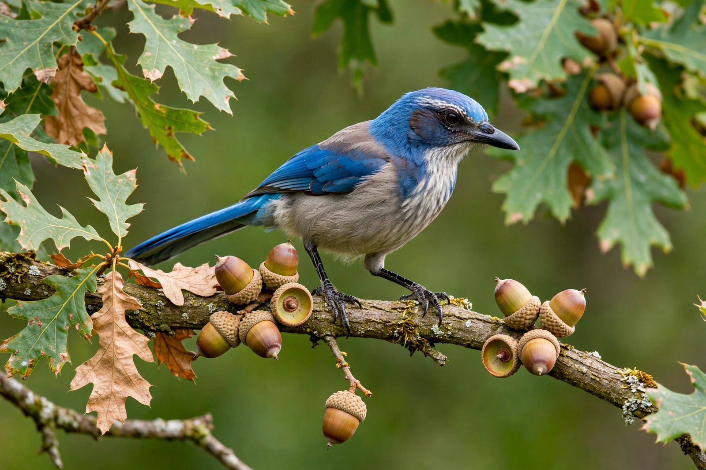

Western scrub-jay
| Western scrub-jay | |
|---|---|
 | |
| Kingdom | Animalia |
| Order | Passeriformes |
| Family | Corvidae |
| Genus | Aphelocoma |
| Species | A. californica |
| Range | Western North America, from Washington to Baja California and through the interior Southwest |
The western scrub-jay (Aphelocoma californica) is a species of scrub-jay native to western North America. It ranges from southern British Columbia through California and western Nevada to Baja California Sur, and in the interior subspecies group through the Rocky Mountain and Great Basin regions. It is a medium-sized jay with a blue head, wings and tail, a grey-brown back, and pale underparts, lacking the crest of the Steller's jay.
In 2016 the American Ornithologists' Union split the western scrub-jay into two species: the California scrub-jay (Aphelocoma californica) of the coastal ranges and the Woodhouse's scrub-jay (Aphelocoma woodhouseii) of the interior. The name "western scrub-jay" is still widely used for the complex as a whole.
Description and habitat
Western scrub-jays are about 28–30 cm long with a wingspan of around 39 cm. They inhabit scrubland, oak woodland, chaparral, pinyon-juniper forest and suburban gardens. Their diet is omnivorous: acorns and pine nuts are staples, supplemented by insects, fruit, eggs and nestlings. Like other corvids they are opportunistic and bold around humans, readily taking food from picnic tables and bird feeders.
Food caching and cognition
Scrub-jays are scatter-hoarders, burying thousands of acorns and other seeds each autumn and relocating them months later using spatial memory; unrecovered seeds contribute to oak dispersal. Because of their caching behaviour, western scrub-jays became a celebrated model species in comparative psychology. In experiments by Nicola Clayton and colleagues at Cambridge, scrub-jays remembered what food they had cached, where, and how long ago — preferring to recover perishable waxworms soon after caching but switching to peanuts after the worms would have decayed — a capacity termed "episodic-like memory" because it integrates what, where and when.
The jays also re-cache food in new sites when they have been watched by a potential pilferer, but only if they themselves have previously stolen other birds' caches — a result interpreted as experience-based perspective-taking and often cited in debates about theory of mind in animals. They also plan for the future in experiments, caching food in a compartment where they have learned they will be hungry the next morning.
Behaviour and breeding
Unlike the Florida scrub-jay, western scrub-jays are generally not cooperative breeders; pairs defend territories and raise their own young, though interior populations may show loose sociality. Their calls are loud and harsh, including a characteristic rising shriek. Lifespan in the wild can exceed 15 years.